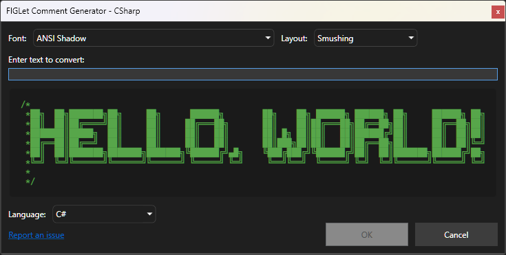
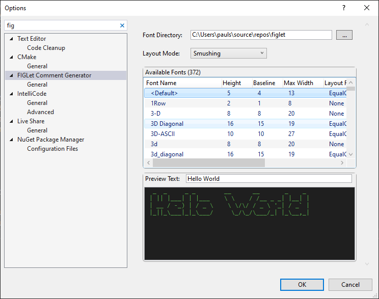

██████╗ ██╗ ██╗████████╗███████╗███████╗ ██████╗ ██████╗ ██████╗ ███████╗
██╔══██╗╚██╗ ██╔╝╚══██╔══╝██╔════╝██╔════╝██╔═══██╗██╔══██╗██╔════╝ ██╔════╝
██████╔╝ ╚████╔╝ ██║ █████╗ █████╗ ██║ ██║██████╔╝██║ ███╗█████╗
██╔══██╗ ╚██╔╝ ██║ ██╔══╝ ██╔══╝ ██║ ██║██╔══██╗██║ ██║██╔══╝
██████╔╝ ██║ ██║ ███████╗██║ ╚██████╔╝██║ ██║╚██████╔╝███████╗
╚═════╝ ╚═╝ ╚═╝ ╚══════╝╚═╝ ╚═════╝ ╚═╝ ╚═╝ ╚═════╝ ╚══════╝
███████╗██╗ ██████╗ ██╗ ███████╗████████╗ ███████╗██╗ ██╗██╗████████╗███████╗
██╔════╝██║██╔════╝ ██║ ██╔════╝╚══██╔══╝ ██╔════╝██║ ██║██║╚══██╔══╝██╔════╝
█████╗ ██║██║ ███╗██║ █████╗ ██║ ███████╗██║ ██║██║ ██║ █████╗
██╔══╝ ██║██║ ██║██║ ██╔══╝ ██║ ╚════██║██║ ██║██║ ██║ ██╔══╝
██║ ██║╚██████╔╝███████╗███████╗ ██║ ███████║╚██████╔╝██║ ██║ ███████╗
╚═╝ ╚═╝ ╚═════╝ ╚══════╝╚══════╝ ╚═╝ ╚══════╝ ╚═════╝ ╚═╝ ╚═╝ ╚══════╝The FIGLet Comment Generator extension brings FIGLet ASCII art directly into Visual Studio. Create bold, readable section headers and file banners inside your code with a single command — powered by the FIGLet .NET Library, the same engine used across the ByteForge FIGLet Suite.
The fastest way to create an ASCII art banner:
Insert FIGLet BannerSupported versions: Visual Studio 2022 | Visual Studio 2026
Right‑click in your code editor to access three banner options:

You can also create banners through the Edit menu:
Edit > Insert FIGLet BannerInput: My Section
Output (using the “small” font, in a C# file):
/*
* __ __ ___ _ _
* | \/ |_ _ / __| ___ __| |_(_)___ _ _
* | |\/| | || | \__ \/ -_) _| _| / _ \ ' \
* |_| |_|\_, | |___/\___\__|\__|_\___/_||_|
* |__/
*//*
* ___ _ _ _
* / __|___ _ _| |_ _ _ ___| | |___ _ _
* | (__/ _ \ ' \ _| '_/ _ \ | / -_) '_|
* \___\___/_||_\__|_| \___/_|_\___|_|
*
*/
public class Controller {
// Class implementation
}/*
* ___ _
* | __|__ _ _ _ __ __ _| |_
* | _/ _ \ '_| ' \/ _` | _|
* |_|\___/_| |_|_|_\__,_|\__|
*
*/
public void Format() {
// Method implementation
}Choose from various FIGlet fonts to style your banner:
Adjust the banner layout using these modes:
The extension automatically detects the file type and applies the correct comment style:
// or /* *///'--//Go to Tools > Options > FIGLet Comment Generator to configure:
Tools > Options > FIGLet Comment Generator.flf files to this directory
Contributions are welcome! To contribute:
This extension is licensed under the MIT License.
For additional support or to report issues: